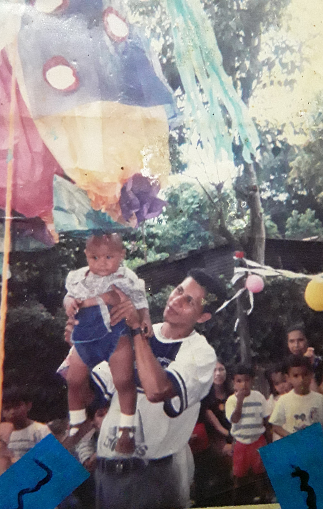
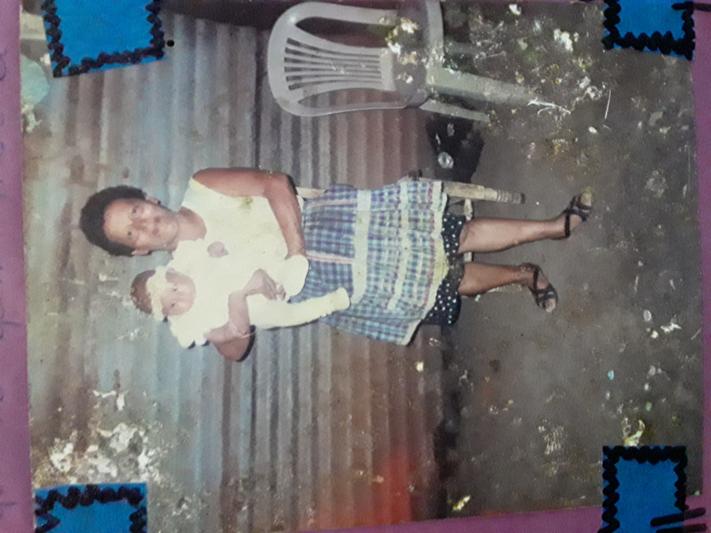
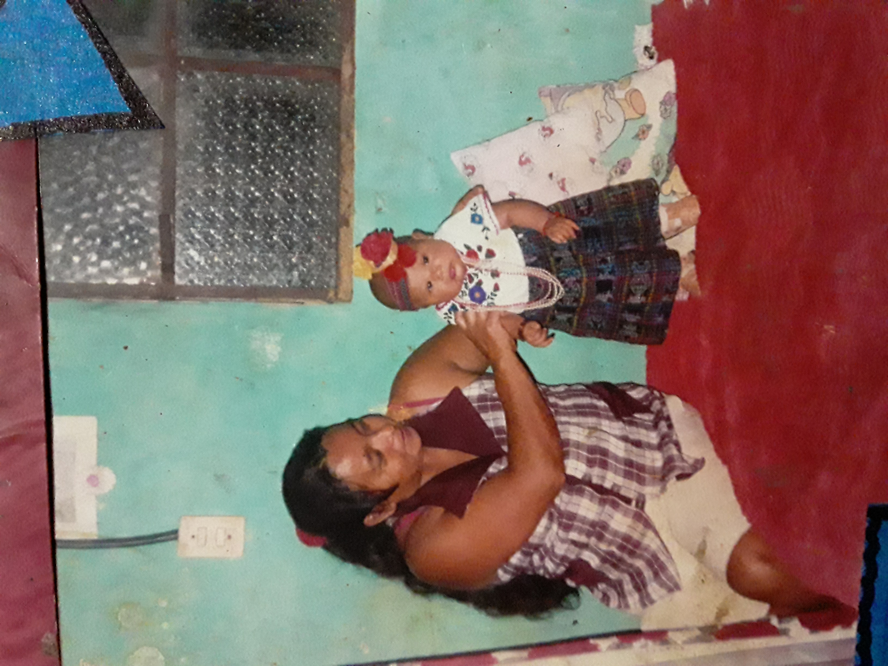

Indice de paginas
Les mostraré algunas fotos reales de mi familia y lo que vivimos y otras serán de internet con fines educativos clic hacia el video
En esta imagen se puede observar cuando celebrabamos el cumpleaños de mi hermana, mi papá cargando a mi hermana que esta tratando de romper la piñata de cumpleaños, eso me trae buenos recuerdos ya que yo estaba muy pequeño tambien, con mi hermana nos llevamos muy bien, simplemente compartimos juntos logros y fracasos, pero nos motivamos a seguir el uno al otro, es como si fuera mi gemela pero no nacimos al mismo tiempo no llevamos una año de diferencia.
Quizá vean que solo hay fotos de mi hermana haha, es porque a mi casi no me tomaban fotos, pero en esta foto se puede observar una tia llamada Araceli Ruiz QEPD, ella nos quería muchisimo, al limite de portarse como si fuera nuestra segunda madre, la apreciabamos pero todo su amor queda en los recuerdos ya que ella en 2015 falleció, pero con ella compartimos muchas experiencias porque siempre estuvo con nosotros.
Por ultimo pero no menos importante, mostraré una imagen de mi abuela materna, tambien traendo buenos recuerdos compartiendo con mi hermana y conmigo. La verdad que en mi familia nos hemos apoyado bastante, no siempre es todo color rosa, sin embargo hemos aprendido que primeramente tenemos que confiar en Dios para poder lograr las cosas que queremos y salir adelante, Dios es el camino al éxito.
